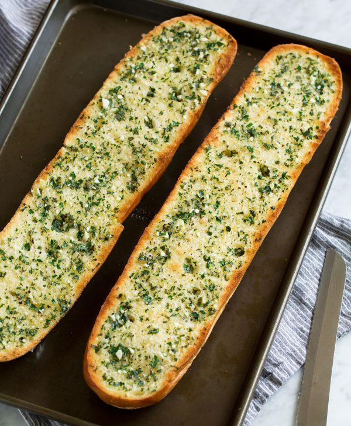

Odin´s Garlic Bread

Description
Fresh and flavorful Garlic Bread warm from the oven! Also known as the perfect beginning to any Italian style dinner.
You get those perfectly crisp edges, a soft buttery center, and a golden brown toasted top with fresh garlic and herbs.
Ingredients
- French bread
- Butter
- Garlic 3 gloves
- Freshly ground black pepper
- Fresh herbs
Steps
- Preheat oven to 350 degrees. Cut french bread loaf in half horizontally.
- In a small mixing bowl stir together butter, garlic, parsley, basil, oregano and pepper.
- Spread garlic butter mixture evenly over both bread halves. Place bread on baking sheet if you haven’t already.
- Bake in preheated oven for 8 minutes.
- Move oven rack closer to broiler. Let bread broil about 45 seconds to 3 minutes until golden brown. Keep an eye on it, it can brown quickly.
- Cut into slices and serve warm. Season with a pinch of salt if needed.